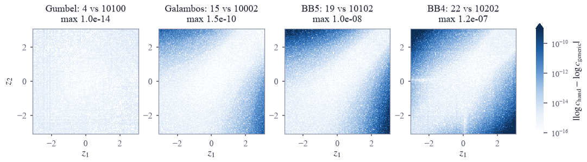
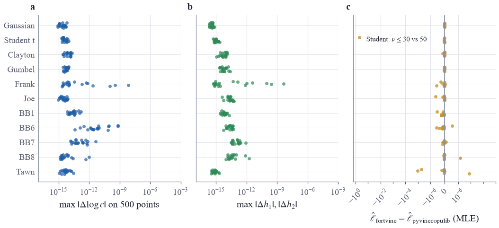

Validation¶
fortvine is tested by two self-contained property suites that need no reference library: every check compares the library against a mathematical identity (an h-function is the integral of the density, an inverse undoes its forward map, a maximum-likelihood estimate is at least as likely as the truth, ...) or against an independent computation inside the suite (brute-force numerical integrals, \(O(n^2)\) definitions, duplicated data). Identities hold for every family and rotation, so they scale to 111 families where a table of reference values would not.
Running the tests¶
compiles and runs test/test_fortvine.f90 and test/test_genfam.f90 against the freshly
built static library. With fpm, fpm test runs the same programs (see
Installation). The suites print a
line per failed check (FAIL: ...), a few informative values, and finish with
fixed-structure loglik selected / truth, npars: 7585.37 7573.05 18 18
== non-simplified edges
held-out loglik relaxed / simplified 646.55 0.00
constant correlation: relaxed in 1 of 20 samples
ALL TESTS PASSED
ok generic Gumbel reproduces the hand-coded family
...
126 near-(counter)monotone parameter draws skipped (|beta| > 0.9)
ok every generic family x 4 rotations: dh/du = c and dC/du = h on a 9 x 9 grid
...
ALL GENERIC FAMILY TESTS PASSED
Either program stops with a non-zero exit code if any check fails, which makes the suites
usable in CI; the repository's GitHub workflow runs bash build.sh test examples on
Ubuntu with -O2 -ffree-line-length-none -fopenmp and two threads. Both suites together
take about 6 seconds on 8 threads.
Randomised checks
Most checks draw fresh random data on every run (call random_seed()); the
tolerances are set so that sampling noise does not cause failures. The number of skipped
near-comonotone draws (126 above) therefore varies between runs.
test_fortvine: the hand-coded families, vines and features¶
1. h-functions, inverses and densities (every family × rotation)¶
For the 23 parametric families 1-23, in every rotation that applies:
- Inversion. On 400 random points, \(\lvert h_1(h_1^{-1}(h_1(v \mid u) \mid u) \mid u) - h_1(v \mid u)\rvert < 2 \times 10^{-10}\), and the same for \(h_2\). The residual, not the forward error, is tested: where the density is nearly zero the forward problem is ill-conditioned for any method (Numerics). The tolerance reflects the \(10^{-10}\) input clamp.
- \(h_1\) is the integral of the density: \(h_1(0.8 \mid 0.37) - h_1(0^+ \mid 0.37)\) equals a 4000-point midpoint integral of \(c(0.37, t)\) over \(t \in (0, 0.8)\) to \(2 \times 10^{-4}\).
- \(h_2\) differentiates to the density: a central difference of \(h_2\) in \(u\) matches \(c(0.37, 0.61)\) to \(10^{-5}\) relative.
- Limits: \(h_1(v \mid u) \to 1\) as \(v \to 1\) and \(\to 0\) as \(v \to 0\).
2. Maximum-likelihood recovery¶
For each of the 23 families, 20 000 observations are simulated and refitted. The fitted log-likelihood must be at least the log-likelihood of the true parameters (up to \(10^{-6}\) relative; 0.05 units for t-EV), which is the defining property of a maximiser. Parameters must be within 30 % of the truth (relative to \(\max(1, |\theta|)\)), except for BB5, BB9 and t-EV, whose likelihoods have near-flat ridges on which the parameters are weakly identified.
3. Vines¶
On a six-dimensional D-vine mixing Tawn (rotated 90°), Student, Clayton and Gumbel pairs (3000 observations):
inverse_rosenblatt(rosenblatt(u)) = uto \(10^{-7}\);- selecting families and parameters on the true structure reaches the true log-likelihood up to 2 units per parameter (printed: 7585.37 selected vs 7573.05 true, 18 parameters each);
pdf_gridequalspdfon the flattened grid to \(10^{-12}\) relative;- the density of a fully selected vine is positive everywhere.
4. Kendall's tau¶
On 700 heavily tied observations (values rounded to 11 levels), the \(O(n \log n)\) tau-b equals the \(O(n^2)\) definition by enumeration of all pairs to \(10^{-12}\).
5. Nonparametric families (TLL, Bernstein)¶
The fitted estimators capture at least 75 % of the true log-likelihood with more than one
effective parameter; hinv inverts hfunc to \(10^{-8}\); the h-function is the integral of
the density (\(10^{-6}\) for Bernstein, \(2 \times 10^{-2}\) for TLL, whose interpolant is
clamped and renormalised as in vinecopulib); and BIC selection prefers the true Gumbel
family over TLL and Bernstein.
6. Weights¶
- The weighted Kendall tau with weights 1 and 2 equals the tau of the data with the weight-2 rows duplicated, to \(10^{-12}\).
- Weighted MLE equals the MLE on duplicated rows for a one-parameter (Clayton) and a two-parameter (BB1) family: parameters to \(10^{-3}\), log-likelihoods to \(10^{-6}\) relative.
- A vine selected with unit weights is identical (families, structure, log-likelihood to \(10^{-6}\)) to the unweighted selection.
7. Discrete margins¶
- For every family × rotation (and a fitted Bernstein copula), the pair "density" of a (discrete, continuous), (continuous, discrete) and (discrete, discrete) observation, i.e. the closed-form differences of h-functions or of \(C\), matches a brute-force midpoint integral of the continuous density over the cell to \(2 \times 10^{-5}\).
- Vine selection with a five-category variable reaches the true log-likelihood up to one unit per parameter.
8. Truncation and tree criteria¶
- With dependence only in tree 1, mBICv truncation selects level 1; with dependence in every tree it selects no truncation (\(d - 1\)).
- Every alternative tree criterion (Spearman, Joe, Hoeffding, Chatterjee's xi, mutual information, Ferreira) gives a valid vine whose log-likelihood is at least 95 % of the tau-based one.
- The Kraskov-Stögbauer-Grassberger mutual information of a Gaussian pair is within 0.04 of \(-\tfrac12\log(1 - \rho^2)\), and Chatterjee's xi detects dependence.
9. Distribution functions, discrete Rosenblatt, caches¶
cdfof the Gaussian, TLL and Bernstein copulas equals a \(1000 \times 1000\) midpoint integral of the density to \(2 \times 10^{-6}\); the bivariate normal \(C(\tfrac12, \tfrac12) = \tfrac14 + \arcsin(\rho)/(2\pi)\) to \(10^{-14}\).- The TLL (discrete, discrete) mass is the exact integral of its interpolant (\(10^{-6}\)).
- Discrete Rosenblatt: \(F(x^-\mid\cdot) \le F(x\mid\cdot)\), equality for continuous columns, the randomised PIT lies between them, and it is i.i.d. uniform (maximum Kolmogorov distance below \(1.63/\sqrt n\), all pairwise correlations below \(4/\sqrt n\)). In the exact two-variable case the transformed columns equal \(h_1\) at \(F(x)\) and at \(F(x^-)\) to \(10^{-9}\).
- A trivariate Gaussian vine with two discrete variables reproduces exact rectangle probabilities to \(10^{-8}\).
- TLL and Bernstein are selected on discrete pairs with sensible likelihoods;
select_thresholdrefitted at the chosen threshold gives the same vine (\(10^{-9}\)); a repeated selection is served entirely from the fit cache and is bit-identical; the joint t-EV fit is a local maximum.
10. Non-simplified vines¶
When the conditional correlation really varies with the conditioning variable, the constant-conditional-correlation test rejects and relaxes exactly one edge, the relaxed vine predicts held-out data better by more than 50 log-likelihood units, and its parameter count includes the anchor parameters. Under a simplified truth the test relaxes an edge in at most 4 of 20 samples (printed: 1 of 20), i.e. it holds its 5 % level.
test_genfam: the generic engine¶
Reproduction of the hand-coded families¶
Eighteen generic codes describe copulas that also exist as hand-coded families, built from completely different formulas: the Archimedean ones from a Laplace transform with \(\ell = s + t\), the extreme-value ones from a Pickands function with \(\Psi = e^{-s}\), BB4 and BB5 as Archimax copulas, Tawn as a Khoudraji-Gumbel copula. On the \(9 \times 9\) grid \(\{0.003, 0.05, 0.17, 0.33, 0.5, 0.66, 0.83, 0.95, 0.997\}^2\) the suite requires agreement of the log-density to \(10^{-6}\) and of both h-functions to \(10^{-9}\). The measured differences are far smaller:
| generic code | hand-coded family | max \(\lvert\Delta \log c\rvert\) | max \(\lvert\Delta h\rvert\) |
|---|---|---|---|
| 10100 | Gumbel | \(2.7 \times 10^{-15}\) | \(1.6 \times 10^{-15}\) |
| 10200 | Clayton | \(3.6 \times 10^{-15}\) | \(4.8 \times 10^{-15}\) |
| 10300 | Joe | \(2.7 \times 10^{-15}\) | \(1.2 \times 10^{-15}\) |
| 10400 | Frank | \(2.2 \times 10^{-14}\) | \(1.4 \times 10^{-14}\) |
| 10500 | BB9 | \(3.6 \times 10^{-15}\) | \(1.8 \times 10^{-15}\) |
| 10600 | BB8 | \(2.4 \times 10^{-15}\) | \(1.8 \times 10^{-15}\) |
| 10700 | BB10 | \(2.8 \times 10^{-15}\) | \(1.7 \times 10^{-15}\) |
| 11500 | BB1 | \(5.3 \times 10^{-15}\) | \(1.8 \times 10^{-15}\) |
| 11600 | BB2 | \(1.4 \times 10^{-14}\) | \(7.1 \times 10^{-15}\) |
| 11200 | BB3 | \(5.3 \times 10^{-15}\) | \(3.6 \times 10^{-15}\) |
| 11900 | BB6 | \(3.6 \times 10^{-15}\) | \(8.9 \times 10^{-16}\) |
| 12000 | BB7 | \(1.1 \times 10^{-14}\) | \(3.3 \times 10^{-15}\) |
| 10002 | Galambos | \(1.2 \times 10^{-11}\) | \(1.6 \times 10^{-15}\) |
| 10005 | Tawn | \(4.4 \times 10^{-15}\) | \(1.2 \times 10^{-15}\) |
| 10202 | BB4 | \(2.6 \times 10^{-10}\) | \(4.3 \times 10^{-15}\) |
| 10102 | BB5 | \(3.4 \times 10^{-10}\) | \(1.9 \times 10^{-15}\) |
| 20001 | Tawn (as Khoudraji-Gumbel) | \(3.1 \times 10^{-15}\) | \(1.1 \times 10^{-15}\) |
| 20003 | Khoudraji-Hüsler-Reiss (inner code 10012) | \(2.7 \times 10^{-15}\) | \(1.8 \times 10^{-15}\) |
Two independent implementations agreeing to \(10^{-15}\) to \(10^{-14}\) is strong evidence that both are right. For the four larger log-density differences, a multiple-precision reference shows that it is the hand-coded formula that loses digits in the off-diagonal corners, while the generic engine stays at \(10^{-15}\) (Numerics). The generic Hüsler-Reiss code 10003 is not in the suite's list: its hand-coded counterpart differs from it by up to \(1.5 \times 10^{-7}\) at \((0.997, 0.003)\), again the hand-coded side's error.

Derivative consistency in four rotations¶
For every valid generic code (including the duplicates, fv_generic_families(.false.)),
in all four rotations, at two random interior parameter points each, on the \(9 \times 9\)
grid:
with central differences of relative step \(10^{-6}\,u(1 - u)\) and a tolerance of \(10^{-3}\) relative to \(1 + c\). These three identities tie the density, both h-functions and the distribution function together, so an error in any one of them (or in a rotation's bookkeeping) is caught. Non-finite values at the extreme corners of strongly dependent members are tolerated as long as most of the grid is finite; finite wrong values are not. Parameter draws with Blomqvist \(\lvert\beta\rvert > 0.9\) are skipped as outside the precision of double arithmetic (see the known limit).
Flip-transpose identity¶
In a vine, an edge's pair copula is sometimes needed with its arguments exchanged. For
every asymmetric generic family in every rotation, the flipped family produced by
gen_flip (Khoudraji \(a \leftrightarrow b\), asymmetric logistic \(\psi_1 \leftrightarrow \psi_2\),
type-1 ↔ type-2 codes, the reparametrised asymmetric mixed model), with rotation 90 ↔ 270,
must satisfy
on the grid to \(10^{-10}\).
MLE recovery¶
For four generic families of different kinds (Khoudraji-Hüsler-Reiss, the Archimax gamma|Hüsler-Reiss, the two-parameter Archimedean gamma.Sibuya, Khoudraji-Frank), 3000 simulated observations are refitted and the fitted log-likelihood must reach that of the true parameters (\(10^{-6} n\)).
Finally, the list fv_generic_families() must contain more than 80 codes, all valid.
What is not tested here¶
- Agreement with other libraries. The benchmarks compare fortvine's
selections and likelihoods with pyvinecopulib (vinecopulib) and torchvine, which is a different kind of
check (same answers as an established implementation), run separately via
bench/run_bench.py. - Near-comonotone parameters (\(|\beta| > 0.9\)), see above.
- The C interface beyond what the examples exercise (interop example).
The figure below is such a cross-library check, run outside the test suites by
tools/page_figures.py validation with pyvinecopulib 1.0.1: the 11 parametric families both
libraries share, 20 random parameter sets and rotations each.
